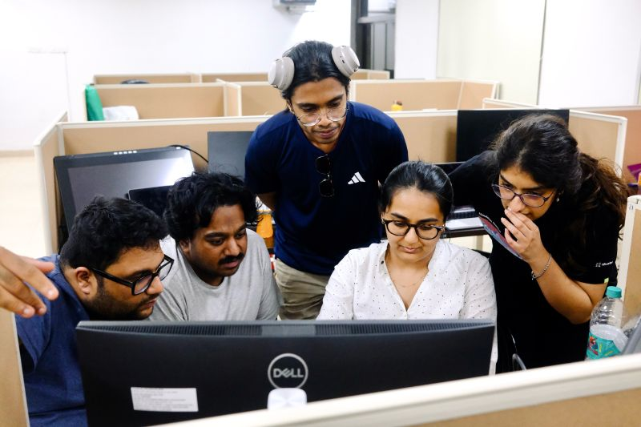
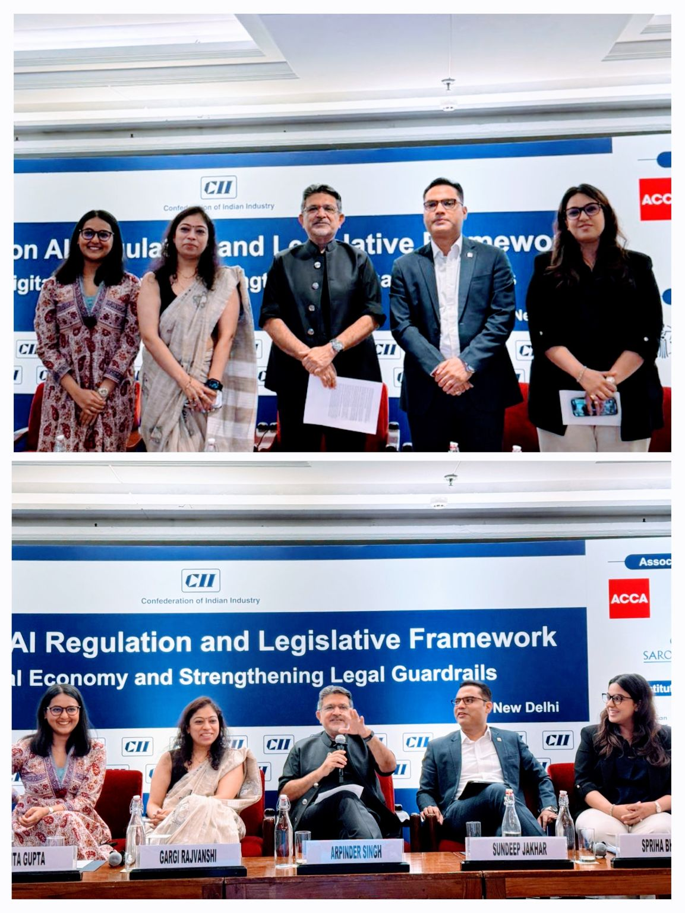
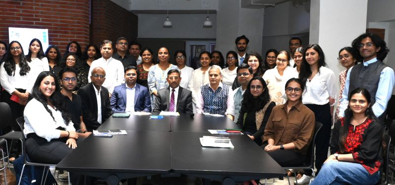
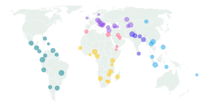
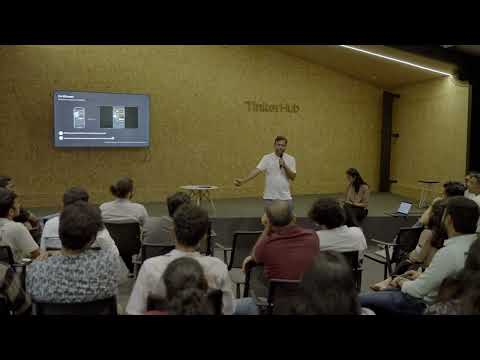
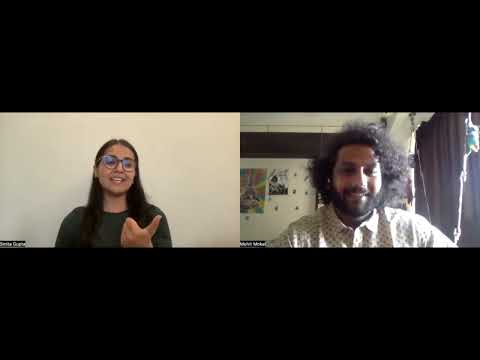
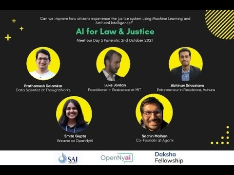

jhana · LinkedIn ·
Smita is an advocate, legal technologist, and Process Architect at jhana.ai.
She uncovers the hidden logic of the judiciary: the messy, unwritten ways courts actually work, and turns them into clear technical roadmaps for AI.
Previously co-led OpenNyAI at Agami, building communities and Digital Public Goods at the intersection of AI, the judiciary, and law.
Awarded a scholarship by the Australian Government for a course on Executive Leadership at the University of Queensland. TA 101 Certified.
Ex-NLS Punjab.

jhana · LinkedIn ·

Arpinder Singh · LinkedIn ·
Australia Awards India ·
The Wire ·

UNDP India · LinkedIn ·
jhana · YouTube ·
Awaaz Pahal Ki · YouTube ·

Atlantic Council ·
UNESCO · YouTube ·

Agami · YouTube ·

Mohit Mokal · YouTube ·
Business Standard ·
Microsoft Source Asia ·
Microsoft · YouTube ·

Agami · YouTube ·